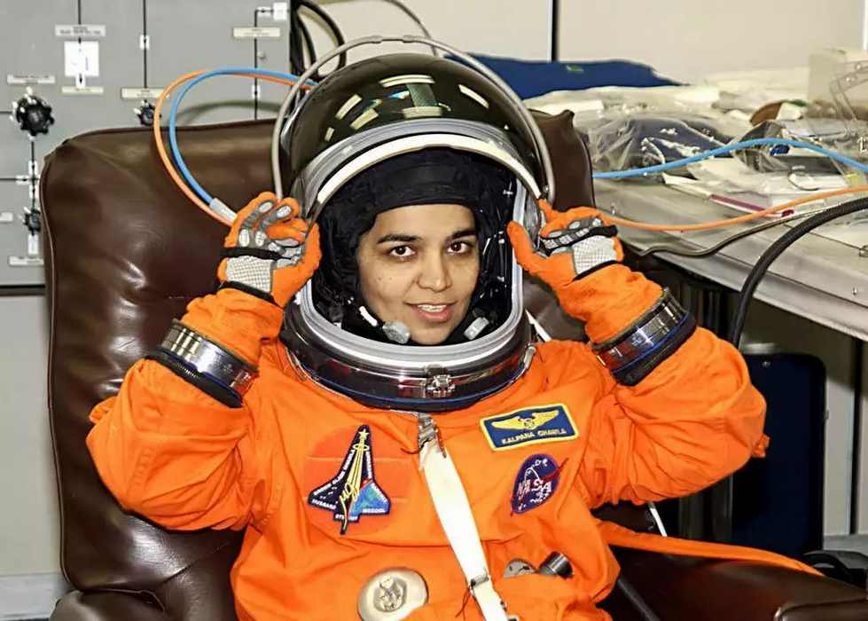

Kalpana Chawla

Kalpana Chawla:Astronaut Kalpana Chawla was the first Indian-born
woman in space.
The life of Kalpana Chawla
Indian-American astronaut Kalpana Chawla was the first India-born woman
to go to space not once but twice. She is a role model for not only the women
around the world, but also all the other people who desire to be an astronaut.
Born on March 17, 1962, in Haryana's Karnal, Chawla's journey to NASA
Astronaut Corps had been carved out of her hard work and determination.
In her last interview to India Today, which she gave just before taking off on
her second and final space mission, Chawla shared her memories of sleeping
in the courtyard under the stars while growing up in Karnal, Haryana.
"We gazed dreamily at the Milky Way, and once in a while caught some
shooting stars. Times like those gave me the opportunity to wonder and ask
all those very basic questions. That sense of awe for the heavens started
there," she had said.
Chawla acquired her Bachelor of Engineering degree in Aeronautical
Engineering from Punjab Engineering College in Chandigarh in 1982.
She began working at the NASA Ames Research Centre in 1988 and
did computational fluid dynamics (CFD) research on vertical/short takeoff
and landing concepts.
Chawla was a creative astronaut. She liked poetry, dancing, cycling and
running.
She was the first Indian-American astronaut and the first India born woman
in space.
Chawla first flew to the outer space in 1977 as a mission specialist and
primary robotic arm operator.
She travelled over 10.4 million miles in 252 orbits of the earth, logging more than
372 hours in space.
In the year, 2000, Chawla was selected for her second flight as part of the
crew of STS-107. The mission got repeatedly delayed and she returned to space
on January 16, 2003
On February 1, same year, Chawla died along with all six other crew members
in the Space Shuttle Columbia on the ill-fated STS-107 mission.
Shortly before it was scheduled to conclude its 28th mission, STS-107,
the space shuttle disintegrated over Texas during re-entry into the Earth's
atmosphere, leading to the death of all the seven crew members.
For more information,check out
Kalpana Chawla on wikipedia